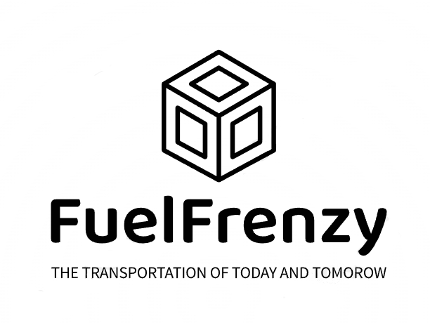

About FuelFrenzy
Eduardo Flamenco was the founder of FuelFrenzy, and as a team of car enthusiasts from the United States, we have always been interested in cars of all types, from vintage muscle cars to modern electric vehicles.
We started this website to share our passion for cars with others and to provide information and news about the latest developments in the automotive industry. We hope you find our website informative and entertaining!
Education
We have received our Bachelor's degrees in Mechanical Engineering from Florida International University (FIU), where we focused on automotive engineering and design.
In addition to our mechanical engineering degrees, we also hold Bachelor's degrees in Computer Science, Cybersecurity, Electrical Engineering, Materials Science and Engineering, and Aerospace Engineering from FIU.
Work Experience
As a team with diverse expertise, we have worked in various roles within the automotive industry. One of us worked as an Automotive Engineer at Ford Motor Company from 2010 to 2015,
where they were responsible for designing and testing automotive components. Another team member worked as a Product Manager at Tesla Motors from 2015 to 2018, where they were involved in the development of electric vehicles.
After gaining valuable industry experience, we founded FuelFrenzy in 2018 to share our passion for cars and provide information about the latest developments in the automotive industry.
In addition to our work in the automotive industry, one of us worked as a Cybersecurity Analyst, where they were responsible for identifying and mitigating cyber threats. Another team member worked as an Electrical Engineer,
where they designed and tested electrical systems for various applications. One team member worked as a Materials Scientist, where they developed and tested materials for use in various industries,
including automotive. Another team member worked as an Aerospace Engineer, where they were responsible for designing and testing aircraft components.
Currently, one of our team members works at AAR Corp as an Aerospace Engineer, where they are involved in the design and testing of aircraft parts and systems. He have been with the company since 2021.
Interests
As a team, we have a shared passion for cars and the automotive industry. We enjoy restoring classic cars to their former glory, attending car shows and races to see the latest developments
in the industry, and exploring new driving routes and scenic roads to experience the joy of driving.